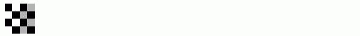

Creating a Gallery of Transformed Images
Many properties of spatial transformations can be identified by transforming a checkerboard image.
Key concepts:
|
Spatial transformation, coordinate system, linear conformal, affine, projective, polynomial, piecewise linear, barrel distortion, pin-cushion distortion
|
Key functions
|
checkerboard, maketform, imtransform, makeresampler, tformarray
|
Overview of Demo
The demo includes these parts:
Image 1: Create Checkerboard
checkerboard produces an image that has rectangular tiles and four unique corners, which makes it easy to see how the checkerboard image gets distorted by geometric transformations.
A geometric transformation is a mapping from one coordinate system to another. In these examples, think of the regular grid of the original checkerboard as the input coordinate system. Each transformed image is in a different coordinate system. The geometric transformation tells us how to map from (x,y) in the original checkerboard to (u,v) in the transformed images.
After you have run this example once, try changing the image I to a larger checkerboard, or to your favorite image.
I = checkerboard(10,2);
figure
subplot(331)
imshow(I)
title('original')

Image 2: Apply Linear Conformal Transform to Checkerboard
Linear conformal transformations may include a rotation, a scaling, and a translation. Shapes and angles are preserved. Parallel lines remain parallel. Straight lines remain straight.
For a linear conformal transformation: [u v] = [ x y 1] T.
T is a 3-by-2 matrix that depends on four parameters.
% Try varying these 4 parameters.
scale = 1.2; % scale factor
angle = 40*pi/180; % rotation angle
tx = 0; % x translation
ty = 0; % y translation
sc = scale*cos(angle);
ss = scale*sin(angle);
T = [ sc -ss;
ss sc;
tx ty];
Since linear conformal transformations are a subset of affine transformations; we create a TFORM struct using:
t_lc = maketform('affine',T);
I_linearconformal = imtransform(I,t_lc,'FillValues',.3);
subplot(332)
imshow(I_linearconformal);
title('linear conformal')
About Translation:
If you change either tx or ty to
a non-zero value, you will notice that it has no effect on
the output image. If you want to see the coordinates that correspond to your
transformation, including the tranlation, try this:
[I_linearconformal,xdata, ydata] = imtransform(I,t_lc,'FillValues',.3);
figure,imshow(xdata,ydata,I_linearconformal), axis on
Notice that xdata and ydata
reveal the translation. To specify what part of the output image you want to
see, use the 'XData' and 'YData' parameters in the imtransform
function.
Image 3: Apply Affine Transform to Checkerboard
In an affine transformation, the x and y
dimensions can be scaled or sheared independently and there may be
a translation. Parallel lines remain parallel. Straight lines remain
straight. Linear conformal transformations are a subset of affine
transformations.
For an affine transformation, the equation is
the same as for a linear conformal transformation: [u v] = [ x y 1] T.
T is a 3-by-2 matrix, where all six elements can be different.
% Try varying any of the six elements of T.
T = [1 0.1;
1 1;
0 0];
t_aff = maketform('affine',T);
I_affine = imtransform(I,t_aff,'FillValues',.3);
subplot(333)
imshow(I_affine)
title('affine')
Image 4: Apply Projective Transform to Checkerboard
In a projective transformation, quadrilaterals map to quadrilaterals. Straight lines remain straight. Affine transformations are a subset of projective transformations.
For a projective transformation: [up vp wp] = [x y w] T, where
T is a 3-by-3 matrix, where all nine elements can be different.
The above matrix equation is equivalent to these two expressions:
u = (Ax + By + C) / (Gx + Hy + 1)
v = (Dx + Ey + F) / (Gx + Hy + 1)
|
Try varying any of the nine elements of T.
T = [1 0 0.008;
1 1 0.01;
0 0 1];
t_proj = maketform('projective',T);
I_projective = imtransform(I,t_proj,'FillValues',.3);
subplot(334)
imshow(I_projective)
title('projective')
Image 5: Apply Polynomial Transform to Checkerboard
In a polynomial transformation, polynomial functions of x and y determine the mapping.
For a second-order polynomial transformation:
[u v] = [1 x y x*y x^2 y^2] T
|
Both u and v are second-order polynomials of x and y. Each second-order polynomial has six terms. To specify all coefficients, T has size 6-by-2.
xybase = reshape(randn(12,1),6,2);
t_poly = cp2tform(xybase,xybase,'polynomial',2);
% Try varying any of the twelve elements of T.
T = [0 0;
1 0;
0 1;
0.001 0;
0.02 0;
0.01 0];
t_poly.tdata = T;
I_polynomial = imtransform(I,t_poly,'FillValues',.3);
subplot(335)
imshow(I_polynomial)
title('polynomial')
Image 6: Apply Piecewise Linear Transform to Checkerboard
In a piecewise linear transformation, linear transformations are applied separately to different parts of the image. In this example the right side of the image is stretched, while the left side is left unchanged.
imid = round(size(I,2)/2); % Find index of middle element
I_left = I(:,1:imid);
stretch = 1.5; % Try varying the stretch factor
size_right = [size(I,1) round(stretch*imid)];
I_right = I(:,imid+1:end);
I_right_stretched = imresize(I_right,size_right);
I_piecewiselinear = [I_left I_right_stretched];
subplot(336)
imshow(I_piecewiselinear)
title('piecewise linear')
The last three examples show how you can create an explicit mapping tmap_b to go from a regular grid (xi, yi) to a different coordinate system (u, v). This mapping tmap_b is used by tformarray to transform the image.
Image 7: Apply Sinusoidal Transform to Checkerboard
% locally varying with sinusoid
[nrows,ncols] = size(I);
[xi,yi] = meshgrid(1:ncols,1:nrows);
a1 = 5; % Try varying the amplitude of the sinusoids.
a2 = 3;
u = xi + a1*sin(pi*xi/imid);
v = yi - a2*sin(pi*yi/imid);
tmap_B = cat(3,u,v);
resamp = makeresampler('linear','fill');
I_sinusoid = tformarray(I,[],resamp,[2 1],[1 2],[],tmap_B,.3);
subplot(337)
imshow(I_sinusoid)
title('sinusoid')
Image 8: Apply Barrel Transform to Checkerboard
Barrel distortion perturbs an image radially outward from its center. Distortion is greater farther from the center, resulting in convex sides.
% radial barrel distortion
xt = xi(:) - imid;
yt = yi(:) - imid;
[theta,r] = cart2pol(xt,yt);
a = .001; % Try varying the amplitude of the cubic term.
s = r + a*r.^3;
[ut,vt] = pol2cart(theta,s);
u = reshape(ut,size(xi)) + imid;
v = reshape(vt,size(yi)) + imid;
tmap_B = cat(3,u,v);
I_barrel = tformarray(I,[],resamp,[2 1],[1 2],[],tmap_B,.3);
subplot(338)
imshow(I_barrel)
title('barrel')
Image 9: Apply Pin Cushion Transform to Checkerboard
Pin-cushion distortion is the inverse of barrel distortion because the cubic term has a negative amplitude. Distortion is still greater farther from the center but it results in concave sides.
% radial pin cushion distortion
xt = xi(:) - imid;
yt = yi(:) - imid;
[theta,r] = cart2pol(xt,yt);
a = -.0005; % Try varying the amplitude of the cubic term.
s = r + a*r.^3;
[ut,vt] = pol2cart(theta,s);
u = reshape(ut,size(xi)) + imid;
v = reshape(vt,size(yi)) + imid;
tmap_B = cat(3,u,v);
I_pin = tformarray(I,[],resamp,[2 1],[1 2],[],tmap_B,.3);
subplot(339)
imshow(I_pin)
title('pin cushion')